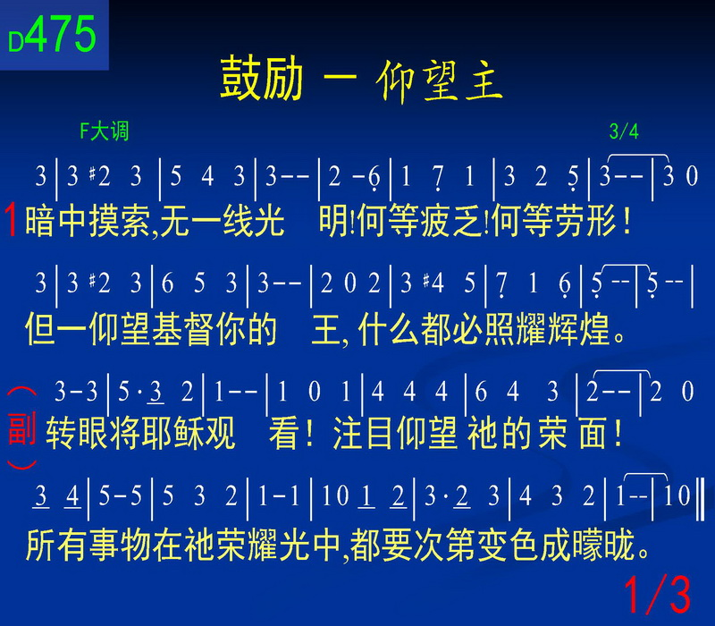

第廿八篇『基督徒正确的为人』（四）-交通与倒垃圾的原则
感谢主，今天下午我们要接着先来看早上的这一篇信息，这一篇信息我们好像也是匆匆忙忙的把它赶过了。但是并没有讲透，到底我们能够再讲多少，求主给我们带领。
那么，这一篇呢？我觉得很重要，弟兄姊妹你觉不觉得重要啊？有时候我们真学会这个秘诀啊？我们就在召会生活中减少很多悲剧，增加许多喜剧。能够保住许多宝贝的弟兄姊妹，也能够挽回好多可爱的弟兄姊妹。我想，我们都乐意做这样荣耀的服事。所以这一篇信息我们在看一看，说到基督徒正确为人里面，我们说过了，第一个正确为人，是心中充满神。
今天这个世界之所以乱了，就是心中无神目中无人，而且再加上一切向钱看。所以呢，天下就大乱。世界上只有两种人，一种人想要有钱，还有一种人想要更有钱。但是有钱可以买到席梦思床、买不到好的睡眠；有钱可以买到各种娱乐，买不到心灵的喜乐；可以买到中西名药，买不到真正的健康；可以买到各种名牌，买不到真正的气质；可以买到婚姻，买不到真正的爱情；可以买到好多的书本、买到好多的学位、买不到真正的学问；可以买到美丽的墓园，买不到永生的盼望。所以不要依靠无定的钱财。我们都知道今天世人心中没有神的时候，他就不得平安。因为天平地平人心不平，人心若平，天下太平，只有平安的神进来了，人才得着平安的生活。而这个平安里面充满神了，你外面彰显开来，发觉都是可爱的人，因为人是神所造的，人是神所要拯救的，人是神所要感动的，是神所要内住的，是神所要变化更新的，是神所要带我们一同进入新耶路撒冷的。所以你有这种看见，你就发觉，我们要热爱神，我们更要亲爱人。因该这样借着主的活，借着这样接枝的生命，我们应该有这样的生活。那怎么活不出来呢？或者怎么活得不够呢？那一定是我有问题。一定是我们还在变化过程之中，所以召会生活是个变化室，我们永远不应该灰心，我们要对这样的生命有把握。那么，有了这个认识以后。我们就巴不得说，主啊，当我去和人接触的时候，我能够给人生命。我能够把人带到主面前，那在这时候、过程中，人一接触，就很容易有绊跌的事，那么，但是绊跌的事是不会少的，但是绊倒人的有祸了，这个麻烦，我们不要若这个祸，但是被绊倒的也不是有福，被绊倒的当然更惨，绊倒人有祸，因为你是作俑者，但是被绊倒的人就惨了。人就一跌不起，一蹶不振了；那这里面有很多的讲究，所以今天早上我们后面分享的时候，我觉得真是非常好。这些分享慢慢的就摸着一些细节，特别再有专业、我们作医生的弟兄，他再分析分析、分享分享，我们觉得很有意思。所以你我要制造一个安全的环境，最好预示不要打滑，就是有打滑环境，你要止滑。那么，有的状况的时候，跌倒了，我们要马上大家彼此扶持，该送医院的送医院，该照X光的照X光，等等，这些都是我们该作的。
我们试试看，今天下午，我没有拿定很清楚的主意，一面说有一个负担再往前，一面说要不要继续下一篇。我心里还在拿捏。现在我先把时间让给我亲爱的甄向光弟兄，让他早上有一点仓促，限制他40秒钟，有一点太委屈了，现在让他不太受限制，能够把他刚刚想要说的，能够说清楚一点，让我们从其中也得着一些的联想和帮助。好，来。
感谢主，我们要吃饱、我们要喝足，主要引导我们走义路，弟兄姊妹，你们吃饱了没有，（吃饱了），还有人没有啊。我们需要吃饱、我们需要喝足，然后主要呼召我们走义路。但是，我们走着、走着、就走到幽谷了。可是发生了一件事，就是在这个走的时候，常常有人要跌倒，这个跌倒阿，其实就是小孩子，你看，这个小孩子跑来跑去，我们常常跟他说，你不要跑啊，再跑要跌倒了，小孩子他就是这样冲冲撞撞跑来跑去，如果我们的生命。就像小孩子一样的生命，我们难免在召会生活当中，这样跑来跑去，跑的很快，这个聚会参加，那个相调也参加，跑来跑去跑的很快，难免会撞东撞西的。这个时候，你就不要怪别人把你绊倒了，有时候是你去撞到什么东西自己跌倒了，我们知道，在所有的老年人当中，最大的死亡原因就是跌倒。因为跌倒之后，他就不能动了，不能动以后，他就卧床了，卧床之后不久，就长褥疮了，长褥疮之后不久，就败血症了，就走了。这一切原因，都起源于跌倒。所以不管是对小孩子来说；还是对大人来说，走这个基督徒道路的时候，满重要的一点，就是怎么样不要跌倒。这个跌倒啊，你看这人跌、那人跌，你看小孩子跑一跑，跌倒了之后啊，有时候他哭、有时候他怒哭，但是小孩子跌倒，好像还好，但是你这个老人家跌倒，就担心了，老人家跌倒担心什么呢？担心他骨折了，为什么小孩子跌倒不用担心啊，老年人跌倒要特别担心啊，因为老人家的骨头酥松，骨头在圣经里面预表一个复活的生命。这个就是刚刚弟兄给我们讲的，就是这个骨头，我不知该怎么连，骨头在圣经里面，主说，祂身上的骨头一根也不能断，祂说到祂是一个不能折断的生命。这个跌倒啊。可能会带来很重要的一个结果。就是骨折。这个骨折有时候很简单就可以知道，有时候这个骨折不太容易知道，我不知道你们年轻弟兄骨折过没有（没有）没有啊，
有一次，我记得那一阵召会生活可能是很忙，不太那么样吃饱，喝足，所以我那一天，小孩子吵了一下，结果我一生气我就用脚踢我家的沙发，谢谢小孩子不乖的气，结果，那一天晚上就睡不着了，脚痛的睡不着。隔天起来，还是痛得很，后来去看门诊的时候，我心里想说，该不会骨头断了吧，结果就真的去照了一个X光，结果就真的是骨头断了。我那时候刚好跟主有一个祷告，如果我从小到大，从来没有发生过是事，最近被我遇见的话，就表示主在某一件，完全限制我了。
我从小到大是从来没有骨折过的，从那次骨折过，我就知道主给我说话了。那时我的脚痛的真是不行，那时我以为要去打石膏啊，打骨钉啊，结果后来都不用。后来是怎么好的，你们知道吗？他（医生）说，你那个位置是大拇指，大拇指是没有打石膏的，他说，你就用纱带把大脚趾和二脚趾绑在一起就行了
弟兄姊妹，我们要非常注意我们里面的生命吃饱了没有，喝足了没有。在我们基督徒的生命里面，我们要有一个不能折断的生命。当我们走路的时候，一不小心跌倒的时候，我们也不用担心它会断掉，但是真的是严重到骨折的时候，千万记得要去处理，因为我在医院里我是作最后一线的感染控制，所以凡是不会处理到最后不能处理的感染都到我手上了，因为我看见非常的多，有许多就是因骨折没有处理，骨折如果没有处理，到最后他一个最重要的结果是什么呢？就是骨髓炎。所谓的骨髓炎的意思就是说，所有的细菌已经进到骨头里面去了，你看，细菌刺到你的皮肤丰富组织里面，大家都怕死了吧？细菌如果跑到你的血液里面，如果给病人解释说，这是败血症，哇，败血症，听起来就很可怕啊，一讲完，病人可能就哭了。然后你想细菌都已经刺到你骨头里面去了，哇，这个就是非常的厉害。所以你知道说，我们一旦跌倒之后，他其实会带来一个非常严重的后果的。所以我们感觉到我们绊跌什么弟兄的时候，我们应该操练要再回去看看他。因为他有可能因为这样的绊跌，你可以早一点把他带来照一下X光，照X光就是蒙光照。蒙一点神话的光照。真的是这样子啊，我们看病的时候，用各样不同的光，用一些可见光，用一些不可见光。X光，超声波，都是在蒙光照的过程里面，我们需要回去再看看他，可能早一点把他带来照一下X光片，我们可能要帮他找一些弟兄姊妹们，他们可能有一些更好属灵教导的，来帮帮他们打打石膏，我们可能知道要把他和另外一个弟兄绑在一起，好让他在受伤当中，他这个骨折被愈合。该打石膏的要打石膏，该绑在一起的要绑在一起。为什么呢？就是要避免细菌来感染。这个细菌感染最麻烦的一种，就是感染到骨头里面，一旦骨科医师知道这个是感染细菌了，感染到骨头里面了，他们一定头很大，他们一定很头疼。像我是作感染的，我们一看到这个，也是头很痛，因为那个要刮死骨头，你知道吗？而且那个抗生素要用两个月。我希望我们跌倒都不要跌得这么严重。平常我们都要吃饱喝足，平常我们就要把这个不能折断的生命，储存在我们里面。叫我们里面得的是更丰盛的生命。就是哪一天我我们跌倒了，我们也不至于跌得这么重。这个绊跌，难怪主说，这个绊跌人、和不绊跌人，有时候是免不了的。免不了，小孩子跑步总是会跌倒的，老年人到浴室洗个澡，浴室很滑，都会跌倒的。还有一种，就是老年人半夜他起来尿尿，老年人半夜他起来尿尿是个大的学问啊，老年人半夜他起来尿尿，这个灯一定要打的很亮，在老人这个医学里面，如果从他的睡铺到浴室，这个灯一定都要打亮的，你不打亮的话，就像这节圣经说的，我们上午的刚要第三点他说，爱弟兄的就是住在光明中，在他并没有绊跌的缘由。你知道这个绊跌的缘由很多时候是因你走的路太暗了，你看不清楚，你就跌倒了。所以在照顾老人家的时候，或者是什么时候，你一定要把那个灯点亮，晚上一定要余留一个灯给他。然后还有一些绊跌的缘由，包括什么呢？就是在这个路上堆了太多杂乱的东西，这个也非常容易让人家跌倒。这个是什么意思呢？这个就是刚刚跟光弘弟兄讲，我临时被点上来，就是有一点灵感，但是我也不知道怎么交通，但是光弘弟兄他刚刚讲说，可能就是指我们召会的生态，在我们召会的生态里面，我们要有一个比较好的生态。好像在这个浴室里面，总是保持很干燥，不要有一个太滑的情况。还有，我们走的路里面不要放太多的杂物，然后我们要记得给我们的弟兄留一点的灯，让他万一需要起来的时候，不会跌倒。这个我们平常要彼此之间多讲主的话，把主的话好像光一样供应给我们的弟兄们，供应给我们的姊妹们。所以第一个，我们自己不要有绊跌的缘由，第二个，我们所在的环境也没有让我们能够绊跌的缘由，这样我们就能够更多的来避免绊跌人和被绊跌的事情。我记得很久以前，那时候我们在医院传福音的时候，光弘弟兄有一次来，就交通到这个绊跌的事，其实我刚刚讲得这么多，我摸着最深的一点，还是跌倒很多的原因，都是因为自己跌倒的。那个原因都不能怪别人，通常都是因为姿态放太高，所以我们如果姿态底一点，通常就不会绊跌，我记得光弘弟兄他早上的那个例子，我是印象特别深，他说，一个杯子如果放在这里（桌子）一个小孩子来一碰就倒了，但是如果这个杯子是放在这里（地上），而且它本来就是倒的，那你怎么叫它倒呢？就不会倒了。所以真的是我们的姿态很重要，我们的态度真的是很重要，我们能够学主一样屈服降卑这是非常的重要。为什么呢？因为他可以让我们不绊跌。为什么呢？他可以让我们不用在那里一直卧床，最终有一天导致属灵的死亡，阿门。
好，谢谢我们的弟兄。我想我们这样一交通啊，里头就更清楚了。那弟兄姊妹，我们真是盼望借着这个聚会，我们不是听一些真理、道理，我们希望我们走得好。这真是祝大家一路好走啊。对不对，这个走，是今天走啊，我们这个走啊，走属天的道路，我可以告诉大家，我刚才越听越觉得安慰，地上的生命，地上的生命是什么？一天衰弱一天，我们外面的人渐渐毁坏，渐渐朽坏，但是里面的人，一天新似一天。主在我们里面加多了，就不会减少了。我们这个骨质是不会流失的，骨质只要加多了，就钙质了，就坚固了。圣经里告诉我们，我们人慢慢会老，但是呢，一个基督徒的老，不应该是老旧的老，不是老化的老，而是老练的老。外面的人渐渐老化，渐渐毁坏，这是律，你不要挣扎努力了，顺其自然。但是里面的人可是要顺水推舟，里面的人要他天新似一天，我们是日日更新，达到怎么呀？基督徒，我们神儿女的路，这一条生命的路是什么呀？越照越明，直到日午。这条路不是日落西山的路，乃是越照越明，直到日午的路。所以我们真的不是到末了老化、老旧，骨质疏松，老死，这是外面身体的状况，刚才我们弟兄说了，把体质作好，把骨头弄强壮，今天我们肉身的骨头不能勉强，但是我们里面生命的骨头，就是那复活的生命，主说，要得生命，得的更丰盛。
所以早上提的那些会绊跌的缘由，跟异象有关，跟真理有关，跟生命的成熟有关，这一些就是叫我们成为一个不绊跌的元素，叫我们身上没有绊跌的缘由。那么，我们再回到第五大点，第五大点这里，我们把他好好看过之后，若来得及，我们就要快快的往前去。第四点说，不被绊跌的路，就是拨开事物的表象，看见属灵的实际。
肆、不被绊跌的路
一、拨开事物的表象，看见属灵的实际
1、对一切神所安排的事，我们要看见后面属灵的实际。不要单单注意浮淡的外表。
2、在这一条道路中，虽然有千万件事，叫你跌倒，但是你要拨开这一切事，向前直望属灵的实际，不要因表面错误的事而受影响。
二、必须看见清楚的异象。
三、不注视周围的人、事、物，只转眼注目主自己，转眼将耶稣观看，注目仰望祂的荣面！所有事情在祂荣面光中，都要次第褪色成朦胧。（大本诗歌475）
四、借十字架否认己，把自己放在低处，谦卑自己。
伍、学习谦卑的功课
一、要有基督徒正确的为人需要谦卑。(太十八1.4。)谦卑就是像小孩子。我们若不谦卑，不是被人冒犯，就是冒犯人；也就是说，不是被人绊跌，就是绊跌人。
二、所有绊跌的事都是因着骄傲发生的。我们若不骄傲，就不会被绊跌。我们会被绊跌，就证明我们是骄傲的。
三、小孩若被激怒，几分钟之内就忘了。然而大人一旦被激怒，他们就因着骄傲被绊跌。不仅如此，我们使人绊跌也是由于我们的骄傲
四、要有基督徒正确的为人，我们需要谦卑。我们若谦卑，就不会得罪人，也不会被人得罪。我们不会绊跌人，也不会被人绊跌。
五、所有绊跌的事，不论出于我们自己或别人，都是来自骄傲。我们需要恨恶骄傲，并且对待祂如同必须杀死的『地鼠。』否则，骄傲的『地鼠』会毁坏正常的召会生活。
六、我们不该自以为了不起，反而要看见自己一无所是，一无所有。我们需要基督自己，来顶替我们。我们若不自以为了不起，比别人更大，就不会绊跌人，也不会被绊跌。
【例：杯子放在最低处就不容易绊倒。】
七、在这件事上，必须学习取用十字架，背十字架，并将主了结的死，应用在我们的处境中。如果我们不取用十字架，并应用在我们身上，我们就不仅会绊跌别人，也会一再绊跌自己。
八、在召会生活与事奉里，得罪人是非常严重的事。有时我们好像能够完成许多事，然而我们所拆毁的也许比所建造的还多。这是绊跌人的结果。
九、我们常常听见一句提醒的话说：『你作主的工，不可建造一尺，然后拆毁一尺半。』我们总得小心谨慎，不要伤害人，不要得罪人，也不要绊跌人。
十、有些弟兄姊妹一面绊跌别人，另一面又容易被别人得罪。因此，他们总是和人有难处。他们不是绊跌别人，就是被别人得罪。我们应当尽力不绊跌人，反要常常甘心乐意赦免得罪我们的人。
陆、勉励的话
一、「故意绊倒人是肉体，容易被绊倒也是肉体。」
二、「不要故意绊倒人，也不要怪罪被人绊倒，要倒都是自己倒，（都是自己有倒的因素。）」
三、「绊倒人的事是免不了的，但是，要儆醒谨慎，尽力避免绊倒人；因为，绊倒人的有祸了！但是，更要操练不要被绊倒，因为，被绊倒的绝非有福了。」
四、「爱每一个人，不加害任何人，信托少数的人。」
五、「要尽量领会；不要尽量误会！」（对主，主的话，主的仆人）
六、遇见事情要学习说：「主啊！我不懂，但是我仍然爱你！」而不要说：「我不信！」因为「我们晓得万有都互相効力，叫爱神的人得益处。」（罗8：28）
七、学习达到「为己无所求，为主求一切」的境界。古人也说：「无欲则刚，有容乃大。人到无求，品自高。」
八、「认识我们都是堕落、失败与软弱的，我们都是亚当的族类，在消极方面，我们不过是五十步与百步之分，所以不要五十步笑百步。」
九、我们都需要主的怜悯与保守，因为「主一松手，我们就跌碎了。」「当我的心稍为高仰，我就近乎跌倒危地」(诗歌423首)。
十、我们要领会「人的罪恶，都是可赦免的；人的软弱，都是可领会的；人的失败，都是可谅解的；人的血气，都是可明白的。」
十一、但愿我们都达到一个境界，在我们身上能够没有绊跌的缘由。
柒、参考信息
一、倪柝声文集57册第2篇「不要被绊跌」
二、马太福音生命读经第51，52篇
三、马可福音生命读经第28篇
四、路加福音生命读经第38篇